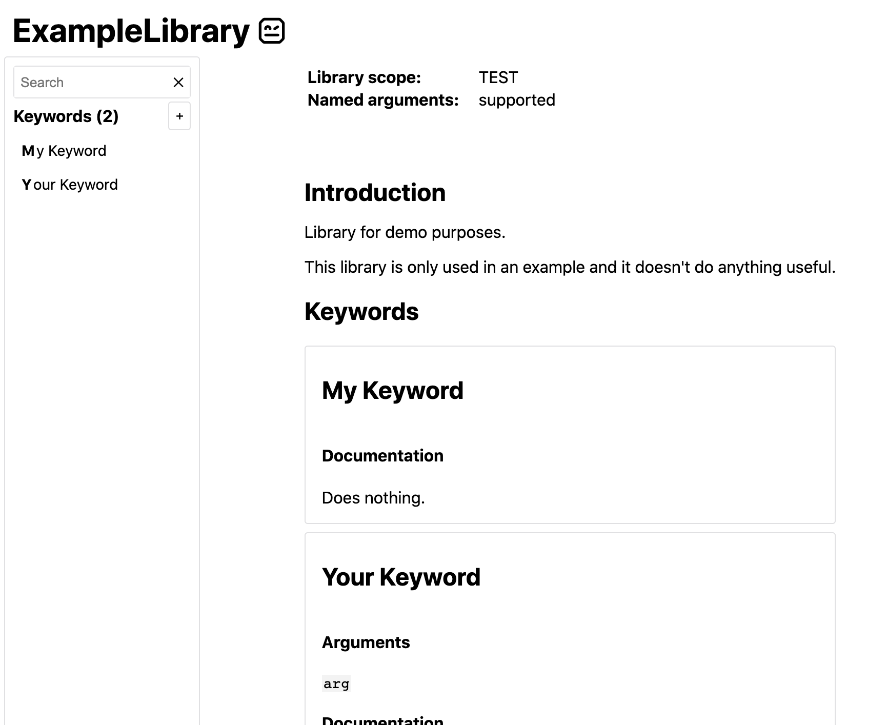

Library documentation tool (Libdoc)¶
Libdoc is Robot Framework's built-in tool that can generate documentation for Robot Framework libraries and resource files. It can generate HTML and Markdown documentation for humans as well as machine readable spec files in XML and JSON formats. Libdoc also has few special commands to show library or resource information on the console.
Documentation can be created for:
- libraries implemented using the normal static library API,
- libraries using the dynamic API, including remote libraries,
- resource files,
- suite files, and
- suite initialization files.
Additionally it is possible to use XML and JSON spec files created by Libdoc earlier as an input.
Note
Support for generating documentation for suite files and suite initialization files is new in Robot Framework 6.0.
General usage¶
Synopsis¶
Options¶
-f, --format <html|xml|json|libspec|markdown>- Specifies whether to generate an HTML output for humans, a machine readable spec file in XML or JSON format, or a Markdown file. The
libspecformat means XML spec with documentations converted to HTML. The default format is got from the output file extension. Themarkdownformat is new in Robot Framework 7.5. -s, --specdocformat <raw|html>- Specifies the documentation format used with XML and JSON spec files.
rawmeans preserving the original documentation format andhtmlmeans converting documentation to HTML. The default israwwith XML spec files andhtmlwith JSON specs and when using the speciallibspecformat. Not applicable withhtmlormarkdownoutputs. -F, --docformat <robot|markdown|html|text|rest>- Specifies the source documentation format. Possible values are Robot Framework's documentation format, Markdown, HTML, plain text, and reStructuredText. Default value can be specified in test library source code and the initial default value is
robot. Markdown support is new in Robot Framework 7.5. --theme <dark|light|none>- Use dark or light HTML theme. If this option is not used, or the value is
none, the theme is selected based on the browser color scheme. Only applicable with HTML outputs. New in Robot Framework 6.0. -
--language <lang> - Set the default language in documentation.
langmust be a code of a built-in language, which areenandfi. Only applicable with HTML outputs. New in Robot Framework 7.2. -
-N, --name <newname> - Sets the name of the documented library or resource.
-
-V, --version <newversion> - Sets the version of the documented library or resource. The default value for test libraries is defined in the source code.
-
-P, --pythonpath <path> - Additional locations where to search for libraries and resources similarly as when running tests.
-
--quiet - Do not print the path of the generated output file to the console.
-
-h, --help - Prints this help.
Executing Libdoc¶
The easiest way to run Libdoc is using the libdoc command created as part of
the normal installation:
Alternatively it is possible to execute the robot.libdoc module directly.
This approach is especially useful if you have installed Robot Framework using
multiple Python versions and want to use a specific version with Libdoc:
Yet another alternative is running the robot.libdoc module as a script:
Note
The separate libdoc command is new in Robot Framework 4.0.
Specifying library or resource file¶
Python libraries and dynamic libraries with name or path¶
When documenting libraries implemented with Python or that use the dynamic library API, it is possible to specify the library either by using just the library name or path to the library source code:
In the former case the library is searched using the module search path and its name must be in the same format as when importing libraries in Robot Framework test data.
If these libraries require arguments when they are imported, the arguments
must be catenated with the library name or path using two colons like
MyLibrary::arg1::arg2. If arguments change what keywords the library
provides or otherwise alter its documentation, it might be a good idea to use
--name option to also change the library name accordingly.
Resource files with path¶
Resource files must always be specified using a path:
If the path does not exist, resource files are also searched from all directories in the module search path similarly as when executing test cases.
Libdoc spec files¶
Earlier generated Libdoc XML or JSON spec files can also be used as inputs.
This works if spec files use either *.xml, *.libspec or
*.json extension:
Note
Support for the *.libspec extension is new in
Robot Framework 3.2.
Note
Support for the *.json extension is new in
Robot Framework 4.0.
Generating documentation¶
Libdoc can generate documentation in HTML, Markdown, XML or JSON formats. The file where to write the documentation is specified as the second argument after the library/resource name or path, and the output format is got from the output file extension by default.
Libdoc HTML documentation¶
Most Robot Framework libraries use Libdoc to generate library documentation in HTML format. This format is thus familiar for most people who have used Robot Framework. A simple example can be seen below, and it has been generated based on the example found a bit later in this section.

The HTML documentation starts with general library introduction, continues
with a section about configuring the library when it is imported (when
applicable), and finally has shortcuts to all keywords and the keywords
themselves. The magnifying glass icon on the lower right corner opens the
keyword search dialog that can also be opened by simply pressing the s key.
Libdoc automatically creates HTML documentation if the output file extension
is *.html. If there is a need to use some other extension, the
format can be specified explicitly with the --format option.
Starting from Robot Framework 7.2, it is possible to localise the static
texts in the HTML documentation by using the --language option.
See the README.rst file in src/web/libodc directory in the project
repository for up to date information about how to add new languages
for the localisation.
Libdoc XML spec files¶
Libdoc can also generate documentation in XML format that is suitable for external tools such as editors. It contains all the same information as the HTML format but in a machine readable format.
XML spec files also contain library and keyword source information so that
the library and each keyword can have source path (source attribute) and
line number (lineno attribute). The source path is relative to the directory
where the spec file is generated thus does not refer to a correct file if
the spec is moved. The source path is omitted with keywords if it is
the same as with the library, and both the source path and the line number
are omitted if getting them from the library fails for whatever reason.
Libdoc automatically uses the XML format if the output file extension is
*.xml or *.libspec. When using the special *.libspec
extension, Libdoc automatically enables the options -f XML -s HTML which means
creating an XML output file where keyword documentation is converted to HTML.
If needed, the format can be explicitly set with the --format option.
The exact Libdoc spec file format is documented with an XML schema (XSD) at https://github.com/robotframework/robotframework/tree/master/doc/schema. The spec file format may change between Robot Framework major releases.
To make it easier for external tools to know how to parse a certain
spec file, the spec file root element has a dedicated specversion
attribute. It was added in Robot Framework 3.2 with value 2 and earlier
spec files can be considered to have version 1. The spec version will
be incremented in the future if and when changes are made.
Robot Framework 4.0 introduced new spec version 3 which is incompatible
with earlier versions.
Note
The XML:HTML format introduced in Robot Framework 3.2. has been
replaced by the format LIBSPEC ot the option combination
--format XML --specdocformat HTML.
Note
Including source information and spec version are new in Robot Framework 3.2.
Libdoc JSON spec files¶
Since Robot Framework 4.0 Libdoc can also generate documentation in JSON format that is suitable for external tools such as editors or web pages. It contains all the same information as the HTML format but in a machine readable format.
Similar to XML spec files the JSON spec files contain all information and can also be used as input to Libdoc. From that format any other output format can be created. By default the library documentation strings are converted to HTML format within the JSON output file.
The exact JSON spec file format is documented with an JSON schema at https://github.com/robotframework/robotframework/tree/master/doc/schema. The spec file format may change between Robot Framework major releases.
Libdoc Markdown documentation¶
Starting from Robot Framework 7.5, Libdoc can also write documentation into a Markdown file. Markdown files are human readable plain text files, but they can also be converted to HTML or otherwise processed by external tools.
Libdoc automatically uses the Markdown format if the output file extension is
*.md. The format can also be set explicitly with the --format
option:
Documentation is taken from the library or resource as-is without converting it to any other format. The result is thus proper Markdown only if the library uses the Markdown documentation syntax itself.
The --specdocformat, --theme and --language options
are not applicable with Markdown outputs.
Note
The Markdown output format is not guaranteed to stay stable between Robot Framework versions. If you need a stable, machine readable format, use Libdoc spec files instead.
Viewing information on console¶
Libdoc has three special commands to show information on the console. These commands are used instead of the name of the output file, and they can also take additional arguments.
-
list - List names of the keywords the library/resource contains. Can be
limited to show only certain keywords by passing optional patterns
as arguments. Keyword is listed if its name contains given pattern.
-
show - Show library/resource documentation. Can be limited to show only
certain keywords by passing names as arguments. Keyword is shown if
its name matches any given name. Special argument
introwill show only the library introduction and importing sections. -
version - Show library version
Optional patterns given to list and show are case and space
insensitive. Both also accept * and ? as wildcards.
Examples:
When showing documentation of a whole library or some keywords, the overall structure is formatted using Markdown. This is the same formatting that is used with Libdoc Markdown documentation outputs. It is especially convenient with libraries that use Markdown documentation syntax themselves, because then the whole output is in Markdown format. This is demonstrated by the following example from the beginning of the Dialogs library documentation:
Note
Prior to Robot Framework 7.5 console output used custom formatting.
Note
The console output format is not guaranteed to stay stable between Robot Framework versions. If you need a stable, machine readable format, use Libdoc spec files instead. If you want to save the documentation in this format, use Libdoc Markdown documentation outputs.
Writing documentation¶
This section discusses writing documentation for Python based test libraries that use the static library API as well as for dynamic libraries and resource files. Creating test libraries and resource files is described in more details elsewhere in the User Guide.
Python libraries¶
The documentation for Python libraries that use the static library API is written simply as doc strings for the library class or module and for methods implementing keywords. The first line of the method documentation is considered as a short documentation for the keyword (used, for example, as a tool tip in links in the generated HTML documentation), and it should thus be as describing as possible, but not too long.
The simple example below illustrates how to write the documentation in general. How the HTML documentation generated based on this example looks like can be seen above, and there are also bit longer examples at the end of this chapter.
Tip
If you library does some initialization work that should not be done when using Libdoc, you can easily detect is Robot Framework running
Tip
For more information on Python documentation strings, see PEP-257.
Dynamic libraries¶
To be able to generate meaningful documentation for dynamic libraries,
the libraries must return keyword argument names and documentation using
get_keyword_arguments and get_keyword_documentation
methods (or using their camelCase variants getKeywordArguments
and getKeywordDocumentation). Libraries can also support
general library documentation via special __intro__ and
__init__ values to the get_keyword_documentation method.
See the Dynamic library API section for more information about how to create these methods.
Importing section¶
A separate section about how the library is imported is created based on its
initialization methods. If the library has an __init__
method that takes arguments in addition to self, its documentation and
arguments are shown.
Resource file documentation¶
Keywords in resource files can have documentation using
[Documentation] setting, and this documentation is also used by
Libdoc. First line of the documentation (until the first
implicit newline or explicit \n) is considered to be the short
documentation similarly as with test libraries.
Also the resource file itself can have Documentation in the Setting section for documenting the whole resource file.
Possible variables in resource files can not be documented.
Documentation syntax¶
Libdoc supports documentation in Robot Framework's own documentation syntax,
Markdown, reStructuredText, HTML and plain text. The format to use can
be specified in library source code using the ROBOT_LIBRARY_DOC_FORMAT
attribute or the @library decorator, or given from the command line using
the --docformat (-F) option. In all cases the possible case-insensitive
values are ROBOT (default), MARKDOWN, reST, HTML and TEXT.
Robot Framework documentation syntax¶
Robot Framework's own documentation syntax is thoroughly documented in the
Robot Framework format appendix. Its most important features are
formatting using *bold* and _italics_, custom links and
automatic conversion of URLs to links, and the possibility to create tables and
pre-formatted text blocks (useful for examples). If documentation gets longer,
support for section titles can be handy as well.
Some of the most important formatting features are illustrated in this example:
Notice that because this is the default documentation format, there is no need
to use the ROBOT_LIBRARY_DOC_FORMAT attribute nor give the format from
the command line. It is possible that the default format is changed to Markdown
in the future, though, so explicitly specifying the format may be a good idea
also in this case.
Creating table of contents¶
With bigger libraries it is often useful to add a table of contents to
the library introduction. When using the Robot Framework documentation format,
this can be done automatically by adding a special %TOC% marker into its own
line so that it forms its own paragraph. The table of contents is created based
on the first and second level section headers (e.g. = Section =,
== Level 2 ==) used in the introduction.
Note
Generating table of contents is a special feature in Libdoc. It is not supported in other places where the Robot Framework documentation format can be used.
Note
Including first and second level headers in the table of contents is new in Robot Framework 7.5. With earlier versions only the top level headers were included.
Note
Prior to Robot Framework 7.5, the table of contents included links to the Keywords and Importing sections automatically.
Markdown documentation syntax¶
Markdown is a lightweight plain text markup syntax that is widely used for documentation, README files, and technical content across the software development industry. There are various slightly different Markdown flavors, but the basic syntax works the same way across all tools. The following example illustrates the most important features, and details about the supported syntax can be from the Markdown format appendix.
Robot Framework uses the Python-Markdown module as its underling Markdown engine and it needs to be installed separately. If syntax highlighting is needed, the Pygments module must be installed as well.
All other documentation formats supported by Libdoc support internal linking
using backticks like Linking to `My Keyword` works. This kind
of linking is very convenient and it works also with Markdown, but standard
Markdown reference links like Linking to [My Keyword] works are used
instead.
When using Markdown, it is possible to generate table of contents using
the same %TOC% marker that is supported when creating table of contents
using Robot Framework format.
Note
Markdown support is new in Robot Framework 7.5.
reStructuredText documentation syntax¶
reStructuredText is simple yet powerful markup syntax used widely in Python
projects (including this User Guide) and elsewhere. The main limitation
is that you need to have the docutils module installed to be able to generate
documentation using it. Because backtick characters have special meaning in
reStructuredText, linking to keywords requires them to be escaped like
\`My Keyword\`.
One of the nice features that reStructured supports is the ability to mark code blocks that can be syntax highlighted. Syntax highlight requires additional Pygments module and supports all the languages that Pygments supports.
HTML documentation syntax¶
When using HTML format, you can create documentation pretty much freely using
any syntax. The main drawback is that HTML markup is not that human friendly,
and that can make the documentation in the source code hard to maintain and read.
Documentation in HTML format is used by Libdoc directly without any
transformation or escaping. The special syntax for linking to keywords using
syntax like `My Keyword` is supported, however.
Example below contains the same formatting examples as the previous example.
Now ROBOT_LIBRARY_DOC_FORMAT attribute must be used or format given
on the command line like --docformat HTML.
Plain text documentation syntax¶
When the plain text format is used, Libdoc uses the documentation as-is.
Newlines and other whitespace are preserved except for indentation, and
HTML special characters (<>&) escaped. The only formatting done is
turning URLs into clickable links and supporting internal linking
like `My Keyword`.
Internal linking¶
Libdoc supports internal linking to keywords, to used types and to different sections in the documentation.
The link syntax varies depending on the documentation format that is used.
With Markdown linking is done using normal Markdown reference links like
Linking to [target] and with all others the target needs to be surrounded
with backtick characters like Linking to `target`. The actual
targets are the same regardless the documentation format, though.
Target matching is also always case, space and underscore insensitive.
In addition to the examples in the following sections, internal linking and argument formatting is shown also in longer examples at the end of this chapter.
Note
Most of the examples in this section use the backtick linking style
like `target`. Examples can be converted to Markdown
simply by changing links to [target].
Note
There is no error or warning if a link target is not found.
Linking to keywords¶
All keywords the library have automatically create link targets and they can
be linked using syntax `Keyword Name`. This is illustrated with
the example below where both keywords have links to each others.
Note
When using reStructuredText documentation syntax, backticks must
be escaped like \`Keyword Name\`.
Linking to automatic sections¶
The documentation generated by Libdoc always contains sections for overall library introduction and for keywords. If a library itself takes arguments, there is also separate importing section.
All the sections act as targets that can be linked, and the possible target names are listed in the table below. Using these targets is shown in the example of the next section.
| Section | Target Name |
|---|---|
| Introduction | introduction and library introduction |
| Importing | importing and library importing |
| Keywords | keywords |
Linking to custom sections¶
Robot Framework's own documentation format and Markdown format both support section headers, and headers used in the library or resource file introduction automatically create link targets. The example below illustrates linking both to automatic and custom sections:
Linking to types¶
Types that have been used with arguments or return values can be linked as well. This works with all types, but with custom types it is especially convenient to link to the types that may have useful documentation themselves.
Note
Prior to Robot Framework 7.5, the target name to use with some of
the standard types was a generic name like integer and not
the actually used type name.
Linking to custom references¶
With Markdown it is possible to create custom reference targets in library or resource file introduction and link to them in keywords.
Arguments, return values, exceptions and tags¶
Libdoc shows some information about arguments and return values automatically based on the source code. They, as well as possible exceptions, can also be documented using Google Style documentation conventions. Also tags can be listed in documentation similarly.
Note
Support to explicitly document arguments, return values and exceptions using the Google Style is new in Robot Framework 7.5.
Automatically included information¶
The following information is shown for all keywords regardless are they implemented using Robot Framework syntax or Python:
- Argument names. User keyword arguments are shown without the
${}decoration to make arguments look the same regardless the keyword type. - Argument default values.
- Argument types.
- Return value types.
If a shown type is automatically converted, has a custom converter or is based on Enum or TypedDict, the type name becomes a link to further type documentation.
Documenting arguments¶
Robot Framework supports Google style argument documentation:
As the example above demonstrates, arguments are documented under the Args: header
that must be followed with an indented block. The specification
mandates that the indentation should be two or four spaces, but Robot Framework only
requires that the indentation is at least two spaces and that it is consistent
within a block.
Documentation of each argument starts with the argument name followed with a colon
like name:. If the documentation follows on the same line, there must be at
least one space after the colon like name: Documentation. Alternatively,
the documentation can start on the next line like with the argument third
in the above example. As the example also demonstrates, long lines can be wrapped
and extra indentation is preserved.
The specification says that with *varargs and **kwargs the leading * and **
should be included, but with Robot Framework both including and excluding them is
fine. When documenting user keyword arguments, it is possible to omit ${},
@{} and &{} decoration.
Possible argument types in the documentation like name (int): Example are
totally ignored. If type information is important, it must be provided
via type hints or by using the @keyword decorator so that it is available
also during execution and can be used for argument conversion.
Robot Framework considers headers Arguments: and Parameters: to be aliases
for Args:. They, similarly as aliases supported with other headers, may not be
supported by other tools processing documentation, though.
Documenting return values¶
As the example in the previous section already demonstrated, return values can
be documented under the Returns: header as an indented block. The block can
span multiple lines and paragraphs and extra indentation is preserved:
Robot Framework allows the documentation to start already on the header row
as long as there is at least one space after the colon. This means that
short return value documentation can be written on a single line like
Returns: Some value.
Robot Framework recognizes header Return: as an alias for Returns:.
It also considers Yields: as another alias instead of its own section type.
Documenting exceptions¶
Also raised exceptions can be documented. This is done under the Raises: header
using ExceptionType: Documentation syntax that works the same way as the
name: Documentation syntax with arguments:
The Raise: header is considered an alias for Raises:.
Listing tags¶
User keywords support specifying tags using the [Tags] setting and library
keywords support them via the @keyword decorator. With both kind of
keywords it is also possible to list tags as part of the documentation.
This is done under the Tags: header so that tags are separate with a comma:
The tags block must be indented similarly as other special documentation blocks.
Listing tags on the same row as the header like Tags: first, second is also
supported.
Note
Prior to Robot Framework 7.5, tags were only supported on the last row of the documentation.
Handling parsed information¶
All recognized sections are parsed and information they contain is added to Libdoc spec files and shown in Libdoc HTML UI separately. Recognized sections are also removed from the actual keyword documentation.
Possible unrecognized sections are left to the documentation without modification.
Supported formatting¶
There are some times needs to process keyword documentation also using other tools than Libdoc. Such tools can support Markdown or reStructuredText, but all tools do not understand Google style documentation conventions.
If the whole documentation is to be rendered as Markdown or reStructuredText, an empty line can be added after a block header to avoid the header and the following block to be rendered as a single paragraph:
The above is enough to get arguments rendered as a code block in Markdown.
This syntax still would not work too well with reStructuredText, but Robot Framework
allows headers to end with two colons like Args:: and then arguments would
be rendered as a literal block-
An alternative to the above is using a list:
Robot Framework supports -, + and *, followed by a space, as list markers
in this context. The whole list also needs to indented with two or more spaces
the same way as other blocks.
Robot Framework also supports formatting section headers using the asterisk (*)
and underscore (_) characters that are typically used for bold and italics in
different documentation formats. The colon can be either inside or outside
formatting so, for example, both *Args:* and *Args*: are supported.
Argument names can be formatted using the backtick character (`)
that is typically used for inline code. It is possible to use both single
backticks like `name` and double backticks like ``name``.
In this case the colon must not be formatted, so only something like
`name`: Documentation is supported.
Possible header and argument name formatting is totally ignored by Robot Framework and thus has an effect only if the documentation is processed using other tools. Actual argument, return value and exception documentation can also contain formatting and that is handled the same way as formatting elsewhere in the documentation.
Note
External tools that understand Google style documentation conventions may not accept extra formatting that Robot Framework supports. Test the used formatting with all the used tools if interoperability is important.
Libdoc examples¶
The following examples illustrates how to use the most important documentation formatting possibilities, internal linking, and so on.
Using Robot Framework format¶
Click here to see how the generated documentation looks like.
Using Markdown¶
Click here to see how the generated documentation looks like.
Standard library documentation¶
All standard libraries have documentation generated by Libdoc and their documentation (and source code) act as a more realistic examples.